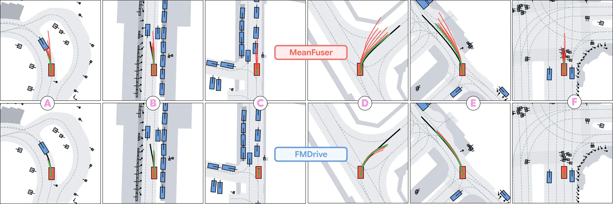
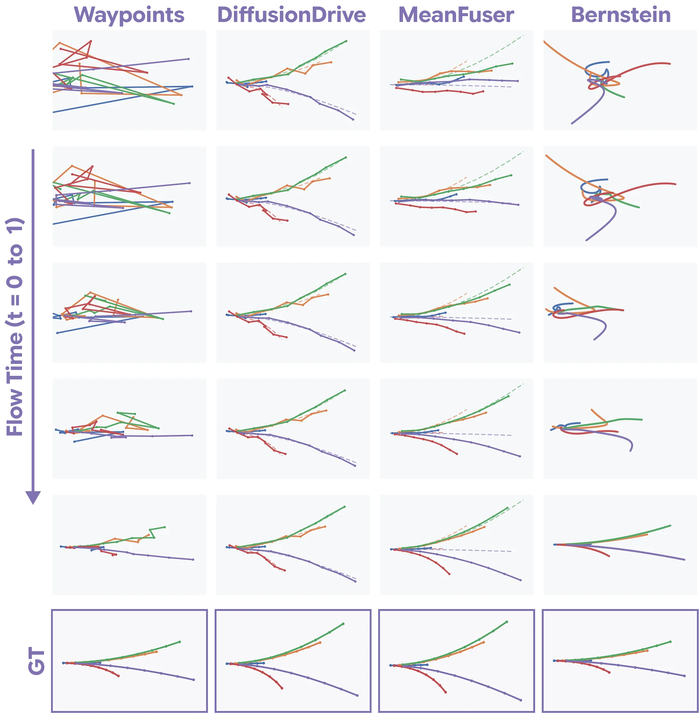
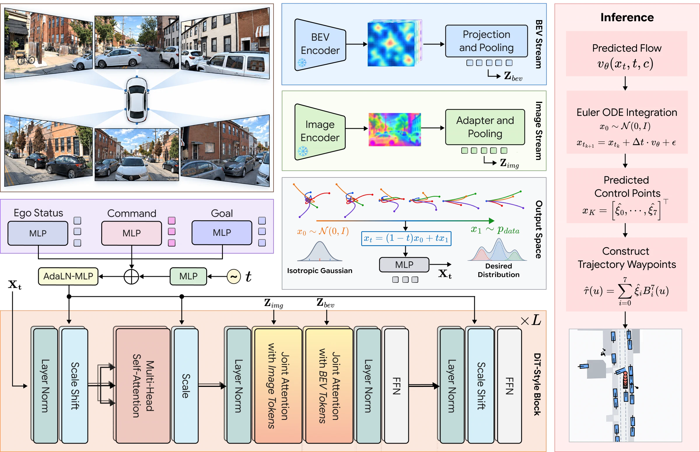

Under Review
TL;DR Flow matching directly over Bernstein coefficients, from a standard Gaussian source with no anchors or mixture priors, reaches 90.04 EPDMS on NAVSIMv2 navtest using camera-only input.

Learning-based trajectory planners for autonomous driving increasingly adopt diffusion or flow-matching formulations to model multimodal, temporally consistent action sequences. However, trajectories represented as discrete waypoints can exhibit temporally inconsistent and non-smooth motion. Top-performing baselines sidestep this by initializing the source distribution from a data-informed prior, such as clustered anchors or a Gaussian mixture fitted to the expert trajectory distribution, so that the model only has to correct a small perturbation around an already expert-like mode. While they may promote smooth trajectories, the generative process becomes biased toward modes captured by the expert-derived prior, making generation dependent on its coverage.
We propose FM-Drive, a conditional flow-matching planner that generates Bernstein polynomial coefficients conditioned on image-based scene context without using expert data in the form of anchors or mixture priors to construct its source distribution. The Bernstein parameterization ensures that every intermediate flow state decodes to a continuous, differentiable trajectory, enabling trajectory-level regularization throughout generation. We exploit this property during training through a jerk-based loss at intermediate states via endpoint reconstruction.
FM-Drive further employs a DiT-based backbone with the proposed joint-attention mechanism to condition the evolving trajectory state on perspective and bird's-eye-view features obtained from multi-view camera-only observations. On NAVSIMv2 open-loop benchmark, FM-Drive achieves an EPDMS of 90.04, outperforming strong generative baselines without relying on data-informed structured priors.
A single Bernstein polynomial describes the entire planning horizon, so trajectory states and their derivatives are analytic and every flow state decodes to a valid curve.

Figure 2. Source-to-target interpolation under different trajectory representations. Waypoints from an isotropic Gaussian prior give non-smooth, self-intersecting intermediate states. DiffusionDrive and MeanFuser initialize from data-informed priors (dashed). Ours starts from the same uninformed isotropic prior as Waypoints, yet every intermediate state is a smooth curve by construction.
Discrete waypoints carry no notion of trajectory geometry. However, Bernstein polynomial continuous time representations are smooth by construction and support higher-order derivatives without any worry about the temporal resolution used in training.
Control points (red) are transported from noise to the expert target while the Bernstein curve (blue) remains smooth, ultimately smoother waypoints.

The DiT reads the scene (image and BEV tokens, ego status, command and goal) and predicts flow for every Bernstein control point.
On NAVSIMv2 navtest, FM-Drive improves over DiffusionDrive and MeanFuser without any expert-derived source prior, and is the strongest learned planner on NC, DDC, TLC, TTC and LK. Most of the gain arises before aggregation, from the Bernstein representation and the jerk regularization.
| Method | NC↑ | DAC↑ | DDC↑ | TLC↑ | EP↑ | TTC↑ | LK↑ | HC↑ | EC↑ | EPDMS↑ |
|---|---|---|---|---|---|---|---|---|---|---|
| Human Agent | 100.0 | 100.0 | 99.8 | 100.0 | 87.4 | 100.0 | 100.0 | 98.1 | 90.1 | 90.3 |
| Ego Status MLP | 93.1 | 77.9 | 92.7 | 99.6 | 86.0 | 91.5 | 89.4 | 98.3 | 85.4 | 64.0 |
| TransFuser | 96.9 | 89.9 | 97.8 | 99.7 | 87.1 | 95.4 | 92.7 | 98.3 | 87.2 | 76.7 |
| Hydra-MDP++ | 97.2 | 97.5 | 99.4 | 99.6 | 83.1 | 96.5 | 94.4 | 98.2 | 70.9 | 81.4 |
| DriveSuprim | 97.5 | 96.5 | 99.4 | 99.6 | 88.4 | 96.6 | 95.5 | 98.3 | 77.0 | 83.1 |
| PRIX | 98.0 | 95.6 | 99.5 | 99.8 | 87.4 | 97.2 | 97.1 | 98.3 | 87.6 | 84.2 |
| DiffusionDrive* | 98.2 | 96.3 | 99.4 | 99.8 | 87.4 | 97.4 | 97.0 | 98.3 | 87.7 | 88.1 |
| MeanFuser* | 98.3 | 97.2 | 99.6 | 99.8 | 87.6 | 97.4 | 97.3 | 98.3 | 88.2 | 89.1 |
| FM-Drive (Ours) | 99.4 | 96.7 | 99.8 | 99.9 | 87.3 | 98.6 | 98.3 | 98.2 | 87.9 | 90.04 |
| Model | Components | Ncand | CL-Proxy↑ | EPDMS↑ |
|---|---|---|---|---|
| Baselines | DiffusionDrive | 20 | 82.6 | 88.1 |
| MeanFuser | 8 | 83.7 | 89.1 | |
| M0 | Base + Waypoints | 8 | – | 72.0 |
| M1 | Base + Bernstein | 8 | 77.0 | 83.2 |
| M2 | M1 + Jerk loss | 8 | 82.8 | 89.6 |
| M3 (FM-Drive) | M2 + ARM | 8 | 84.0 | 90.04 |
| ADE Oracle | M2 + ADE | 8 | 84.6 | 90.8 |
| DiffusionDrive + ADE | 20 | 83.4 | 89.1 | |
| MeanFuser + ADE | 8 | 84.4 | 89.6 | |
Each clip shows the front camera (top) and the bird's-eye view (bottom) for three methods. Select a category, then a clip. More clips are on the additional results page.
The NAVSIM-trained models are run on nuScenes without any fine-tuning.
The route goal is an optional input. Without it, the Gaussian-initialised candidate set stays multimodal across the feasible maneuvers while still retaining a solution close to the ground-truth trajectory. Each clip compares FM-Drive with the route goal and FM-Drive without it.